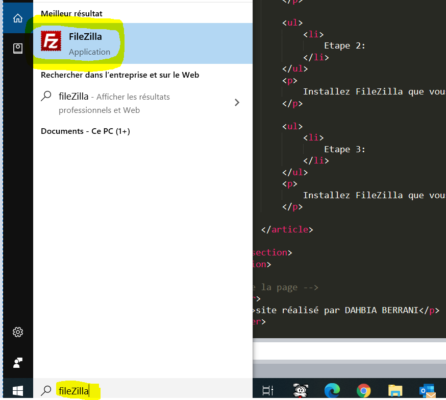
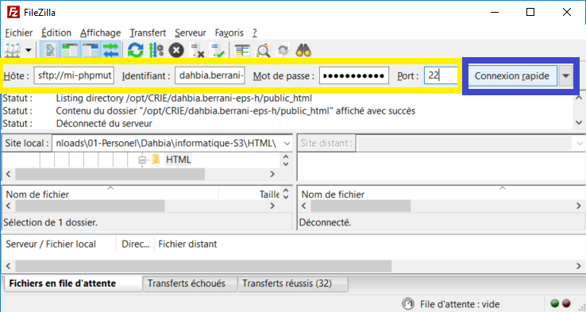
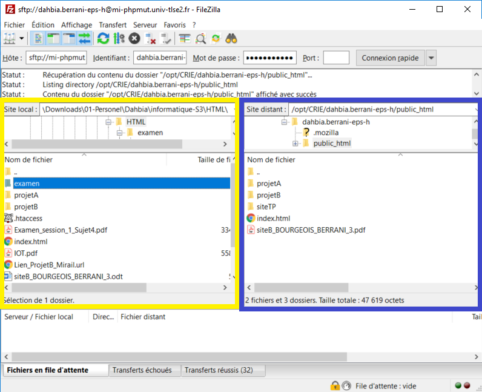

FileZilla Client (FileZilla) est un client FTP et SFTP, développé sous la licence publique générale GNU .
Il est intégré à la liste des logiciels libres préconisés par l’État français dans le cadre de la modernisation globale de ses systèmes d’informations (S.I.).Il existe également un logiciel de serveur FTP du nom de FileZilla Server. Le logiciel est disponible pour Windows, Mac OS X et GNU/Linux. Pour plus d'informations sur le logiciel FileZilla, veuillez cliquer ici.
Historique:
La première version alpha est sortie le 27 février 2001, la première bêta est sortie le 11 avril 2001 et la première version officielle est sortie le 12 juin 2001.La version 2 de FileZilla (septembre 2002) ne fonctionnait qu'avec Windows, alors que la version 3 est multiplate-forme. Toutefois, la version 3 (sortie en 2007) est une réécriture quasi complète de la version 2, ce qui signifie que certaines fonctionnalités de la version 2 n'ont pu être intégrées, mais comme il s'agit d'un logiciel libre, elles le seront probablement ultérieurement.
Etapes FileZilla pour publier un site internet:
Pour mettre en ligne votre site internet, suivez les étapes de 1 à 5 décrites ci-dessous.
Vous pouvez aussi vous réferer à au tutoriel vidéo sur YouTube en cliquant là :
Tutoriel YouTube FileZilla.
Etape 1:
Téléchargez FileZilla client sur votre pc (choisissez la bonne version selon votre sustèmle d'exploitation - Windows, linux ou Mac OS) en cliquant ici Download.
Etape 2:
Installez FileZilla que vous venez de télécharger en suivant les instructions pour l'installation.
Etape 3:
Lancez FileZilla en tapant dans la zone de demarrage de windows "filezilla" et en double cliquant sur l'application FileZilla comme indiqué dans l'image Etape 03 ci-dessous.

Etape 03: Lancement de fileZilla sous windows 10.
Etape 4:
Connectez vous en saisissant dans la zone de connexion rapide de FileZilla l'URL du serveur dans la partie "Hôte" , votre identifiant de connexion dans la aprtie "Identifiant" , votre mot de passe dans la partie "Mot de passe" et 22 dans la partie "Port" afin d'utiliser SFTP puis cliquez sur le bouton "Connexion rapide", par exemple pour vous connecter à votre serveur du l'université Toulouse 2, tapez dans Hôte "mi-phpmut.univ-tlse2.fr" , dans Identifiant "dahbia.berrani-eps-h" ( à remplacer par votre identifiant) , "********" (à remplacer par votre mot de passe) dans la partie Mot de passe et "22" dans la partie Port. Réferez-vous à l'illustration Etpae 04 ci-dessous.

Etape 04: Connexion avec FileZilla Client.
Etape 5:
Une fois connecté, Le logiciel fonctionne comme un explorateur de fichiers. La partie gauche (montrée en couleur jaune dans l'image ci-dessous) représente vos fichiers et dossiers sur votre ordinateur local. La partie droite (montrée en couleur bleue dans l'image ci-dessous).
Vous pouvez maintenant naviguez aussi dans la aprtie droite sur le dossier de votre serveur distant ou vous voulez publier votre site internet (pour l'université Toulouse 2 c'est le dossier "pulic_html") .Naviguez aussi dans la aprtie droite vert le dossier qui contient les fichiers sources de votre site internet. Vous pouvez maintenant publier votre site avec un simple glisser-déposer (drag and drop) de votre dossier de la zone de droite vers la zone de gauche. Une fois la copie terminée, FileZilla vous notifiera de la fin de la copie. Bravo, votre site est maintenant publié.

Etape 05: Transfer de fichiers avec FileZilla.